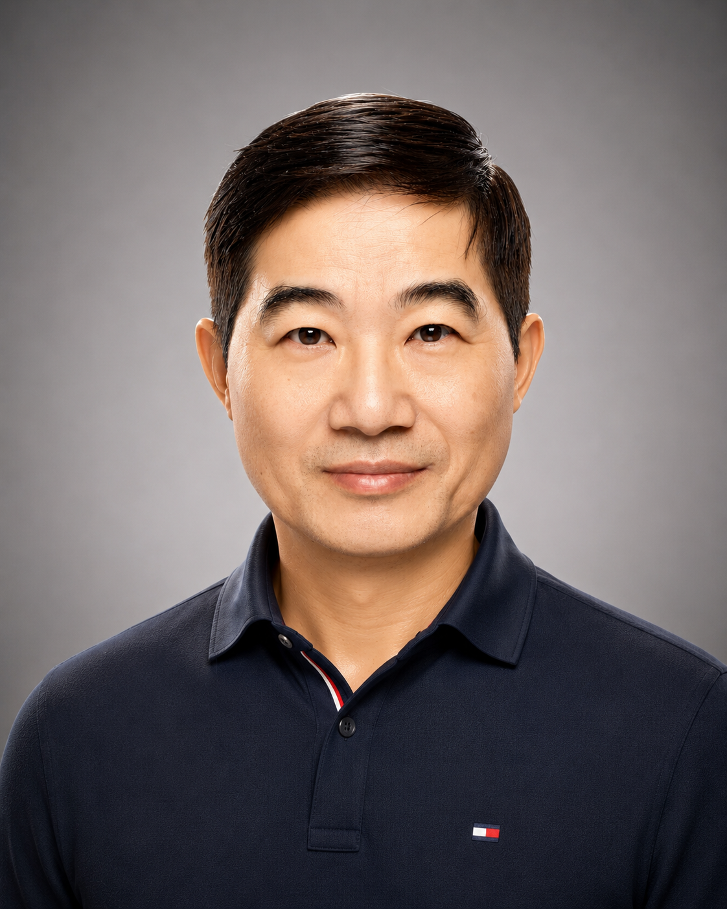

📈
LoadRunner 效能測試
以交易流程、使用者負載、回應時間與瓶頸分析為核心，理解系統在壓力下的真實表現。
我曾經在企業 IT 架構與系統整合領域工作多年。退休後，我仍然保持對新技術的好奇， 近期專注於 LoadRunner、Dynatrace、CI/CD 與雲端自動化，持續把經驗轉化為新的理解。

對我來說，工具不是單獨存在的。LoadRunner 看見壓力與瓶頸，Dynatrace 看見系統行為， CI/CD 則讓交付變得可重複、可追蹤、可改善。
以交易流程、使用者負載、回應時間與瓶頸分析為核心，理解系統在壓力下的真實表現。
透過 APM、服務拓撲、PurePath、異常偵測與根因分析，讓複雜系統的行為變得可閱讀。
以 Shell、Ansible、Jenkins、GitLab CI/CD、Docker、Harbor 與 Kubernetes，建立可重複的維運與部署流程。
一個成熟的 IT 架構師，不只看單一工具的功能，而是看資料如何流動、風險如何被提前發現、 系統如何在每次交付後變得更可靠。
關注尖峰負載、交易延遲、吞吐量與使用者體驗。
用可觀測性縮短問題定位時間，讓資訊從模糊變清楚。
把測試、監控與部署規則放進交付流程，降低人為風險。
我的背景橫跨計算機網路、軟體工程、資料平台、效能調校與企業架構。 這些經驗讓我看技術時，總是同時思考系統、資料、流程、風險與長期維運。
研究所主修電子工程，研究方向聚焦在計算機網路與軟體工程。這段訓練建立了我後來理解分散式系統、 企業 IT 架構與大型系統整合的基礎。
畢業後進入台灣 IBM，最初擔任系統工程師，之後轉任產品經理。工作範圍從台灣逐步擴展到大中國地區， 累積了技術、產品、市場與跨區域協作的完整經驗。
1997 年移民加拿大後，進入 IBM 多倫多實驗室，參與 DB2 產品的 Performance Monitor 與 tuning 工作。 這兩年的經驗讓我更深入理解資料庫效能、監控與產品級軟體工程。
之後進入 CIBC 工作約兩年，開始更深入接觸加拿大金融業 IT 系統與企業級應用環境。
隨後加入 BMO，長期擔任 Solution Architect、Technical Architect 等資深架構角色，直到 60 歲退休。 主要工作聚焦在大數據資料處理、資料擷取、企業級 Data Warehouse，以及從內部資料中心逐步轉向 AWS 的大型資料平台演進。
退休後，我持續加強 Python programming，並深入學習 AI、Machine Learning、Transformer 與大型語言模型。 我上過台大線上課程，也購買並完成多門網路課程，把新技術與過去的企業架構經驗連在一起。
這個網站可以持續擴充成個人技術筆記、作品集、學習紀錄與分享頁面。 以下是目前適合放在首頁的學習路線。
練習把真實業務流程轉換成測試腳本，理解 think time、correlation、parameterization 與測試情境設計。
學習服務拓撲、交易追蹤、基礎設施指標、異常事件與根因分析，建立更完整的系統視野。
理解 source control、build、test、deploy、approval 與 rollback 如何形成一套可靠的軟體交付機制。
用架構師角度連結技術、流程、風險與人，讓每一次學習都能回到更大的系統思考。
退休後花時間玩出來的三個網頁作品，從太空到足球再到個人品牌，每一行都是自己寫的。
這個網站已經整理出你的職涯背景、真實照片、LoadRunner、Dynatrace、自動化維運、CI/CD 與雲端資料平台經驗； 之後可以再延伸 LinkedIn、履歷下載與技術文章。